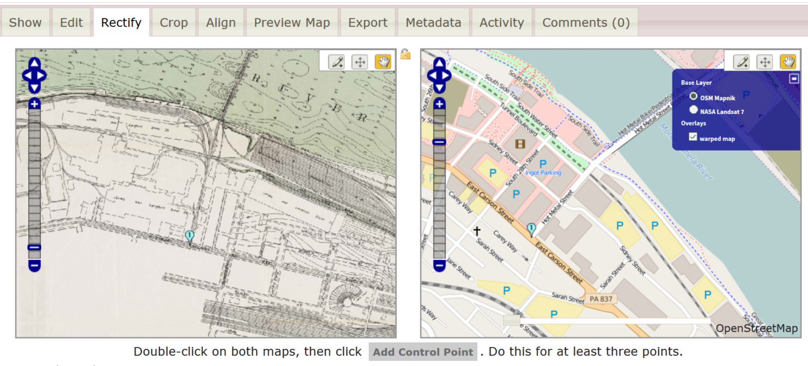
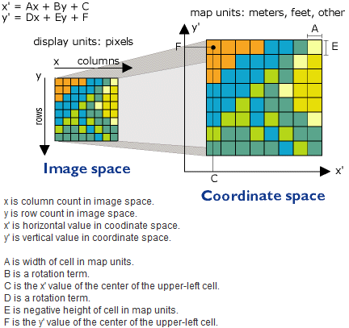
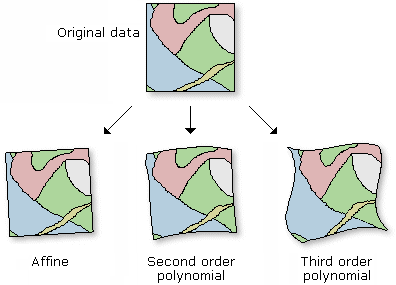

PLEASE interrupt if you have questions!
Today we're going to talk about
Map Warper
mapwarper.net
and the process of putting images of maps into a digital geographic context:
Georeferencing
Why might you want to do this?
You may not have access to the data used to make the map, but want to see the map in the context of other geographic data.
- Historic maps - what used to be here?
- Photos of non-current political district maps...snap a photo of that old map you see in a public building
- Maps from community development corporations, from old hand drawn annual reports and the like
- Zoning maps from small municipalities that don’t have a GIS department
- Community plan drafts handed out at public meetings (likely created in CAD/GIS, but without easy access to the consultant, etc.)
First, Let's find some images of maps!
Full-Image and Description
See An Example
Full-Image provides a little image-viewer. Zoom and pan around.
Description provides important metadata: Title, Date, Creator, etc. Also, read the Rights and download a copy.
Important!
Pitt's maps themselves (which we will use for our examples tonight), and many historic maps are in the public domain.
However, always be cognizant of copyright and license when using the work of others.
NYPL includes some maps outside NYC. Search for “pennsylvania map” and check the “search only public domain” to see some great stuff! (and you can filter down by “place” once you are in the main search area.)
Also see buildinginspector.nypl.org and spacetime.nypl.org for some interesting historic mapping projects from the NYPL.
Great collection, and Sanborn maps are relatively easy to georeference due to the map projection (a little more on that later).
All the maps maps on these sites are stored as image files.
The files themselves contain no machine-readable geographic information.
If we want to view these maps in a geographic context, with other geographic data...
we need to georeference them
What does it mean to georeference an image?
First, let's talk about the basics of images on computers and maps.
A raster stores data in pixels
On maps, pixels are powerful.
In Geographic Information Systems (GIS) software, the pixels of a raster can represent color, height, slope, direction...and many other classifications or gradients.
Geographically-referenced raster data is commonly encountered in:
- satellite imagery
- weather data
- digital elevation model
Such rasters contain geographic reference information that describes where the pixels exist on the globe.
This info typically includes the coordinate system and some information about the raster's dimensions, in a standard format.
The historic images do not (yet) have this information.
Raster as a text file (ascii) with geo info:

Download a map from the University of Pittsburgh's Historic Pittsburgh Maps Collection that you'd like to georeference
Some maps will be easier to georeference than others.
Find one with a lot of detail. For your first map, try to avoid broad-scale or conceptual maps.
How do I georeference an image using Map Warper?
- Sign-Up
- Upload map and enter metadata (really, really important!)
- Georeference (Rectify, Crop, Align)
- View!
- Export to a file or reference as a web service
- (make fixes)
Upload
Make sure to copy metadata from your source!!!
Be thorough! Give credit!
(you can add more later if you need to)
Rectify using Control Points

Image Space,
Coordinate Space
our map image at left,
our web map at right
Identify Control Points
A little bit of art
to the science...
Find clearly-defined points of reference,
like buildings or intersections.
Avoid using "soft" references,
like shorelines.
Rectify
Save the image to coordinate space
Technically...

source
Stretch that map!

source
Crop and Align
Crop lets you cut off portions of the image. Useful if you scan has extra white space. But please avoid cropping any info that might help identify the map.
Align lets you specify other maps you've uploaded to Map Warper
Now that I've georefernced this map...what do I do with it?
EXPORT
- Download a georeferenced image file for use in geographic information systems (GIS) software
- Get the
KML version and view/share it with Google Maps
- Build a web map and reference the map service hosted for you by MapWarper
Work Session!
(tag your maps with MaptimePGH)
Share Your Work!
Q/A + Troubleshooting
Did anyone have a map didn't work?